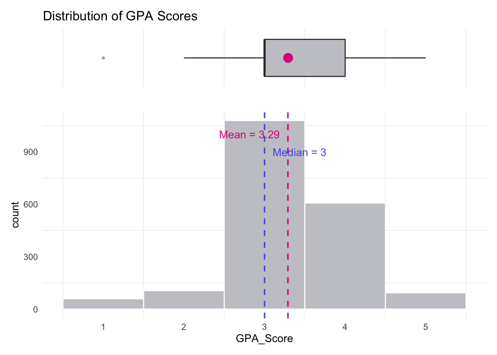
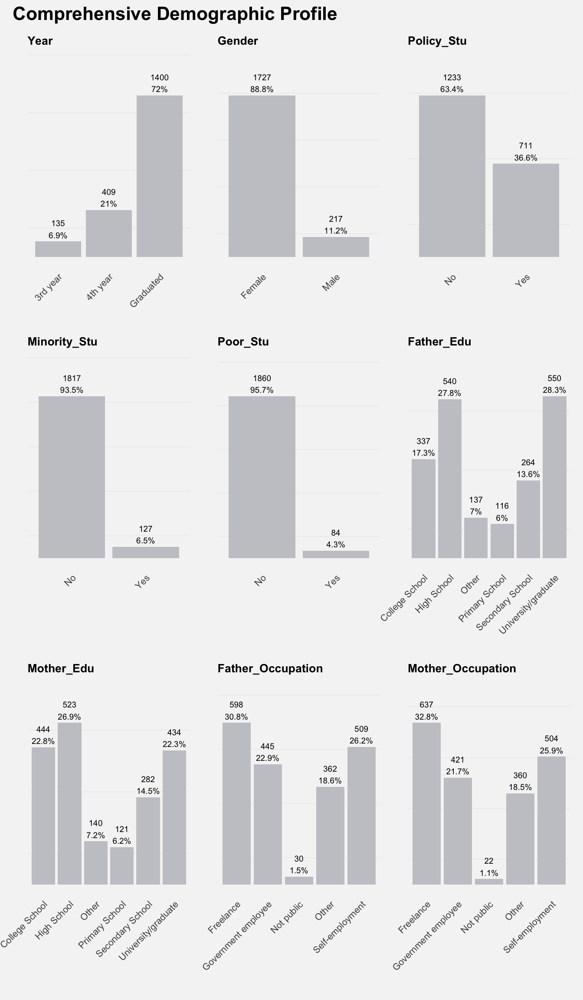
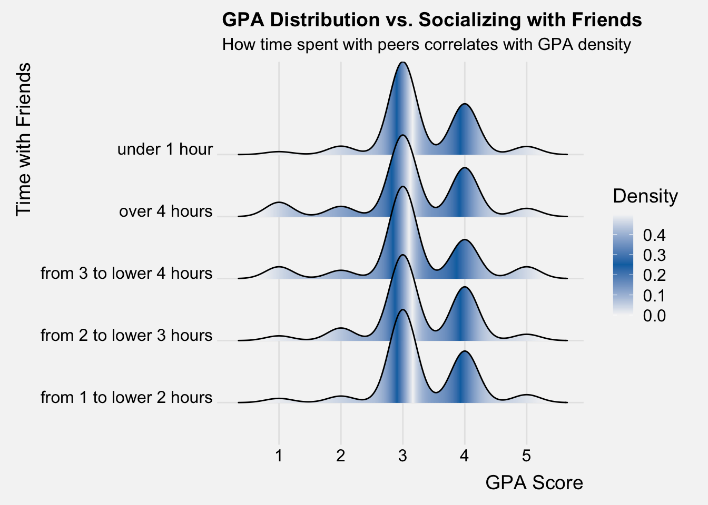
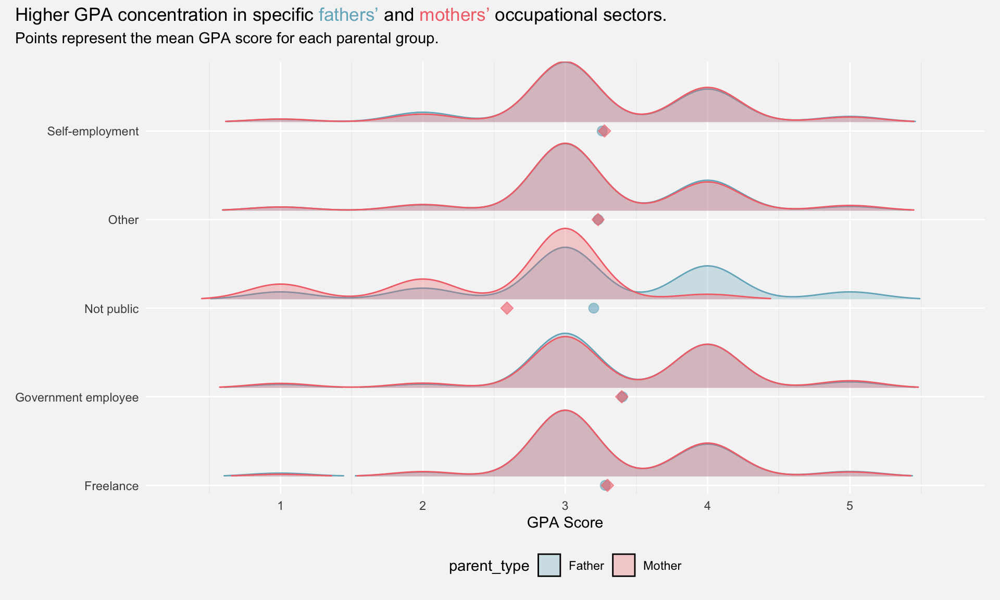
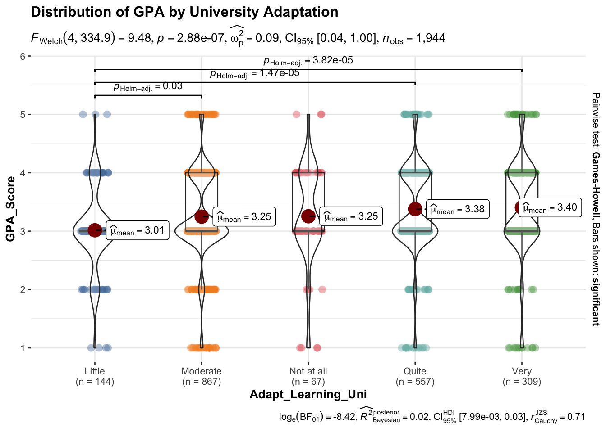

Show the code
pacman::p_load(tidyverse, haven, knitr, patchwork,
ggthemes, scales, ggridges, ggpubr,
gganimate, ggdist, ggtext, ggextra,
cowplot, ggnewscale)A Visual Dialogue: Deciphering Student Success with R and tidyverse
Understanding the drivers of student success is a long-standing challenge in education. Research indicates that learning outcomes are shaped by a complex interplay of internal factors, such as student motivation and interest, and external factors, including family socioeconomic status, teacher support, and institutional facilities.
In the Vietnamese context, studies emphasize that student self-efficacy and lecturer capacity are pivotal to academic performance. Additionally, the quality of educational services and campus environment significantly impacts student satisfaction and outcomes.
This study leverages a comprehensive dataset from the University of Education, Vietnam National University, Hanoi (VNU-UET). By applying R-driven visualizations, we aim to uncover how these diverse elements—ranging from pedagogical approaches to learning conditions, influence the academic journeys of 2,170 students and alumni in the digital age.
This analysis utilizes a 2023 survey dataset from the University of Education, Vietnam National University, Hanoi, to explore factors influencing student learning outcomes.
Using the 2023 Student Questionnaire Dataset from the University of Education, Vietnam National University, Hanoi, this post aims to apply appropriate Exploratory Data Analysis (EDA) methods and ggplot2 functions to uncover and communicate key observations regarding the factors influencing student learning outcomes.
Tools: It highlights the required use of R and ggplot2 mentioned in your instructions.
Goal: It maintains the core requirement of finding 5 to 10 observations.
| Library | Description |
|---|---|
| tidyverse | A collection of core packages designed for data science, used extensively for data preparation and wrangling. |
| haven | To enable R to read and write various data formats such as SAS and SPSS. |
| knitr | For dynamic report generation. |
| patchwork | For preparing composite figure created using ggplot2. |
| ggthemes | Extra themes, geoms, and scales for ggplot2. |
| scales | For data labels and annotations for ggplot2. |
| ggridges | For ridgeline plots that create the impression of a mountain range. |
| ggpubr | For publication-ready plots. |
The following code chunk uses p_load() of pacman package to check if the packages are installed in the computer. If they are, the libraries will be called into R.
pacman::p_load(tidyverse, haven, knitr, patchwork,
ggthemes, scales, ggridges, ggpubr,
gganimate, ggdist, ggtext, ggextra,
cowplot, ggnewscale)The dataset (data/Database paper.xlsx) used in this exercise is the Student Learning Outcomes survey dataretrieved from the University of Education, Vietnam National University, Hanoi (VNU-UET). It contains responses from 2,170 students and alumni collected in 2023.
We import this dataset as stu_data.
library(tidyverse)
library(readxl)
library(ggstatsplot)
stu_data <- read_excel("data/Database paper.xlsx")To maintain consistency with the survey structure provided in the dataset, I have retained variables that are grouped into three primary categories. These groupings help in systematically analyzing how different dimensions of a student’s life contribute to their overall academic success:
Group A – Student Demographics: This category establishes the foundational profile of the participants. It encompasses innate characteristics such as gender and year of study, alongside socio-economic indicators like parental background and daily time management habits.
Group B – Learning Perceptions: This group captures the subjective academic experience. By analyzing factors like adaptability to the university environment and perceptions of teaching quality, we can measure the “process” of learning.
Group C – Grade Point Average (GPA): Acting as the primary performance metric, GPA is categorized into five ordinal levels (from “Poor” to “Excellent”) to represent defined academic outcomes.
The following detailed list provides a roadmap for our Exploratory Data Analysis (EDA), where we will investigate the correlations between these foundational factors, student perceptions, and final academic achievements.
graph TD
subgraph GA [Group A]
A_Main(Demographics)
A_Main --> A1[Personal: Gender, Year, Minority]
A_Main --> A2[Socio-economic: Parent Edu & Occupation]
A_Main --> A3[Time: Friends, Social Media, Studying]
end
style GA fill:#e1f5fe,stroke:#01579b,stroke-width:2px
style A_Main fill:#fff,stroke:#333
graph TD
subgraph GB [Group B]
B_Main(Learning Perceptions)
B_Main --> B1[Environment: Adaptability & Facilities]
B_Main --> B2[Institutional: Uni & Lecturer Support]
B_Main --> B3[Social: Peer Influence & Competition]
end
style GB fill:#f3e5f5,stroke:#4a148c,stroke-width:2px
style B_Main fill:#fff,stroke:#333
graph TD
subgraph GC [Group C]
C_Main(Academic Performance)
C_Main --> C1[Target Variable: GPA Level]
end
style GC fill:#fff9c4,stroke:#fbc02d,stroke-width:2px
style C_Main fill:#fff,stroke:#333
| Variable Name | Description | Type | Encoding Scheme |
|---|---|---|---|
| Year | Student's current year of study | NUM | 3: 3rd year, 4: 4th year, 5: Graduated |
| Gender | Student's gender | NUM | 1: Male, 2: Female |
| Policy_Stu | Policy-based students (priority status) | NUM | 1: Yes, 2: No |
| Minority_Stu | Minority ethnic group status | NUM | 1: Yes, 2: No |
| Poor_Stu | Students from poor-household backgrounds | NUM | 1: Yes, 2: No |
| Father_Edu | Students' father educational background | NUM | 1: Primary...5: Graduate, 6: Not public |
| Mother_Edu | Students' mother educational background | NUM | 1: Primary...5: Graduate, 6: Not public |
| Time_Friends | Average time each day hanging out with friends | NUM | 1: <1h, 2: 1-2h, 3: 2-3h, 4: 3-4h, 5: >4h |
| Time_SocicalMedia | Average time each day using social media | NUM | 1: <1h, 2: 1-2h, 3: 2-3h, 4: 3-4h, 5: >4h |
| Time_Studying | Average time each day studying | NUM | 1: <2h, 2: 2-4h, 3: 4-6h, 4: 6-8h, 5: >8h |
| Variable Name | Description | Type | Encoding Scheme |
|---|---|---|---|
| Adapt_Uni | The level of adapting to the learning environment at the university | NUM | 1: Not at all ... 5: Very well |
| Effect_Method | The level of effecting on the learning methods | NUM | 1: Not at all ... 5: Very much |
| Support_Uni | The level of supporting from the university | NUM | 1: Not at all ... 5: Very much |
| Support_Lecturer | The level of supporting from lecturers | NUM | 1: Not at all ... 5: Very much |
| Quality_Facilities | The quality of the university's facilities and equipment | NUM | 1: Poor ... 5: Excellent |
| Quality_Lecturer | The quality of lecturers at the university | NUM | 1: Poor ... 5: Excellent |
| Suitability_Curriculum | The suitability of the training curriculum | NUM | 1: Not at all ... 5: Very much |
| Competition_Class | The level of learning competing in classrooms | NUM | 1: Not at all ... 5: Very much |
| Influence_Friends | The level of influence from friends | NUM | 1: Not at all ... 5: Very much |
| Variable Name | Description | Type | Encoding Scheme |
|---|---|---|---|
| GPA | The student's Grade Point Average, categorized into performance levels | NUM | 1: Poor, 2: Average, 3: Fair, 4: Good, 5: Excellent |
We ran the code to check for missing values and found no missing values in the dataset.
for(column_name in names(stu_data)) {
na_count <- sum(is.na(stu_data[[column_name]]))
if (na_count > 0) {
message("Column '", column_name, "' has ", na_count, " NA values.")
} else {print(paste(column_name, ": No missing values"))
}
}[1] "Year : No missing values"
[1] "Gender : No missing values"
[1] "Policy_Stu : No missing values"
[1] "Minority_Stu : No missing values"
[1] "Poor_Stu : No missing values"
[1] "Father_Edu : No missing values"
[1] "Mother_Edu : No missing values"
[1] "Father_Occupation : No missing values"
[1] "Mother_Occupation : No missing values"
[1] "Time_Friends : No missing values"
[1] "Time_SocicalMedia : No missing values"
[1] "Time_Studying : No missing values"
[1] "GPA : No missing values"
[1] "Adapt_Learning_Uni : No missing values"
[1] "Study_Methods : No missing values"
[1] "SupportOf_Uni : No missing values"
[1] "SupportOf_Lec : No missing values"
[1] "Facilitie_Uni : No missing values"
[1] "Quality_Lecturer : No missing values"
[1] "TrainingCurriculum : No missing values"
[1] "Competitive_Class : No missing values"
[1] "InfuenceF_Friends : No missing values"stu_data_labeled <- stu_data %>%
mutate(
Year = recode(Year,
"3" = "3rd year",
"4" = "4th year",
"5" = "Graduated")
)stu_data_labeled <- stu_data_labeled %>%
mutate(Gender = recode(Gender,
"1" = "Male",
"2" = "Female"))stu_data_labeled <- stu_data_labeled %>%
mutate(Policy_Stu = recode(Policy_Stu, "1" = "Yes", "2" = "No"))stu_data_labeled <- stu_data_labeled %>%
mutate(Minority_Stu = recode(Minority_Stu, "1" = "Yes", "2" = "No"))stu_data_labeled <- stu_data_labeled %>%
mutate(Poor_Stu = recode(Poor_Stu, "1" = "Yes", "2" = "No"))stu_data_labeled <- stu_data_labeled %>%
mutate(Father_Edu = recode(as.character(Father_Edu),
"1" = "Primary School",
"2" = "Secondary School",
"3" = "High School",
"4" = "College School",
"5" = "University/graduate",
"6" = "Other"))stu_data_labeled <- stu_data_labeled %>%
mutate(Mother_Edu = recode(as.character(Mother_Edu),
"1" = "Primary School",
"2" = "Secondary School",
"3" = "High School",
"4" = "College School",
"5" = "University/graduate",
"6" = "Other"))stu_data_labeled <- stu_data_labeled %>%
mutate(Father_Occupation = recode(as.character(Father_Occupation),
"1" = "Government employee",
"2" = "Self-employment",
"3" = "Freelance",
"4" = "Other",
"5" = "Not public"))stu_data_labeled <- stu_data_labeled %>%
mutate(Mother_Occupation = recode(as.character(Mother_Occupation),
"1" = "Government employee",
"2" = "Self-employment",
"3" = "Freelance",
"4" = "Other",
"5" = "Not public"))stu_data_labeled <- stu_data_labeled %>%
mutate(Time_Friends = recode(as.character(Time_Friends),
"1" = "under 1 hour", "2" = "from 1 to lower 2 hours",
"3" = "from 2 to lower 3 hours", "4" = "from 3 to lower 4 hours",
"5" = "over 4 hours"))stu_data_labeled <- stu_data_labeled %>%
mutate(Time_SocicalMedia = recode(as.character(Time_SocicalMedia),
"1" = "under 1 hour", "2" = "from 1 to lower 2 hours",
"3" = "from 2 to lower 3 hours", "4" = "from 3 to lower 4 hours",
"5" = "over 4 hours"))stu_data_labeled <- stu_data_labeled %>%
mutate(Time_Studying = recode(as.character(Time_Studying),
"1" = "under 2 hours", "2" = "from 2 to lower 4 hours",
"3" = "from 4 to lower 6 hours", "4" = "from 6 to lower 8 hours",
"5" = "over 8 hour"))stu_data_labeled <- stu_data_labeled %>%
mutate(
GPA_Score = as.numeric(as.character(GPA)),
GPA_Level = recode(as.character(GPA),
"1" = "Under 2.0 – Poor",
"2" = "From 2.0 to lower 2.5 – Average",
"3" = "From 2.5 to lower 3.2 – Fair",
"4" = "From 3.2 to lower 3.6 – Good",
"5" = "Over 3.6 – Excellent")
) %>%
select(-GPA) stu_data_labeled <- stu_data_labeled %>%
mutate(Adapt_Learning_Uni = recode(as.character(Adapt_Learning_Uni),
"1" = "Not at all", "2" = "Little", "3" = "Moderate",
"4" = "Quite", "5" = "Very"))stu_data_labeled <- stu_data_labeled %>%
mutate(Study_Methods = recode(as.character(Study_Methods),
"1" = "Not at all", "2" = "Little", "3" = "Moderate",
"4" = "Quite", "5" = "Very"))stu_data_labeled <- stu_data_labeled %>%
mutate(SupportOf_Uni = recode(as.character(SupportOf_Uni),
"1" = "Not at all", "2" = "Little", "3" = "Moderate",
"4" = "Quite", "5" = "Very"))stu_data_labeled <- stu_data_labeled %>%
mutate(SupportOf_Lec = recode(as.character(SupportOf_Lec),
"1" = "Not at all", "2" = "Little", "3" = "Moderate",
"4" = "Quite", "5" = "Very"))stu_data_labeled <- stu_data_labeled %>%
mutate(Facilitie_Uni = recode(as.character(Facilitie_Uni),
"1" = "Not at all",
"2" = "Little",
"3" = "Moderate",
"4" = "Quite",
"5" = "Very"))stu_data_labeled <- stu_data_labeled %>%
mutate(Quality_Lecturer = recode(as.character(Quality_Lecturer),
"1" = "Not at all",
"2" = "Little",
"3" = "Moderate",
"4" = "Quite",
"5" = "Very"))stu_data_labeled <- stu_data_labeled %>%
mutate(TrainingCurriculum = recode(as.character(TrainingCurriculum),
"1" = "Not at all",
"2" = "Little",
"3" = "Moderate",
"4" = "Quite",
"5" = "Very"))stu_data_labeled <- stu_data_labeled %>%
mutate(Competitive_Class = recode(as.character(Competitive_Class),
"1" = "Not at all",
"2" = "Little",
"3" = "Moderate",
"4" = "Quite",
"5" = "Very"))stu_data_labeled <- stu_data_labeled %>%
mutate(InfuenceF_Friends = recode(as.character(InfuenceF_Friends), "1"="Not at all", "2"="Little", "3"="Moderate", "4"="Quite", "5"="Very")
)Using the duplicated function.we see that there are 22 duplicate entries in the data.
stu_data[duplicated(stu_data),]# A tibble: 226 × 22
Year Gender Policy_Stu Minority_Stu Poor_Stu Father_Edu Mother_Edu
<dbl> <dbl> <dbl> <dbl> <dbl> <dbl> <dbl>
1 5 2 2 2 2 5 5
2 5 1 2 2 2 5 5
3 5 1 2 2 2 3 3
4 5 2 2 2 2 4 3
5 5 2 2 2 2 3 3
6 5 2 2 2 2 6 6
7 5 2 2 2 2 5 5
8 5 2 2 2 2 5 5
9 5 2 2 2 2 5 5
10 5 2 1 2 2 4 3
# ℹ 216 more rows
# ℹ 15 more variables: Father_Occupation <dbl>, Mother_Occupation <dbl>,
# Time_Friends <dbl>, Time_SocicalMedia <dbl>, Time_Studying <dbl>,
# GPA <dbl>, Adapt_Learning_Uni <dbl>, Study_Methods <dbl>,
# SupportOf_Uni <dbl>, SupportOf_Lec <dbl>, Facilitie_Uni <dbl>,
# Quality_Lecturer <dbl>, TrainingCurriculum <dbl>, Competitive_Class <dbl>,
# InfuenceF_Friends <dbl>stu_data_labeled <- stu_data_labeled %>%
distinct()
nrow(stu_data_labeled)[1] 1944Observations:

Upon checking the dataset, we identified 226 rows that are exact duplicates across all 22 variables. Since the dataset lacks a Primary Key (e.g., Student ID), these duplicates could represent either:
To ensure data integrity, we will treat these as duplicate entries and retain only unique records.
Now, We take a look at the data.
glimpse(stu_data_labeled)Rows: 1,944
Columns: 23
$ Year <chr> "Graduated", "Graduated", "Graduated", "Graduated",…
$ Gender <chr> "Female", "Male", "Female", "Female", "Male", "Fema…
$ Policy_Stu <chr> "No", "No", "No", "No", "Yes", "No", "No", "No", "N…
$ Minority_Stu <chr> "No", "No", "No", "No", "No", "No", "No", "No", "No…
$ Poor_Stu <chr> "No", "No", "No", "No", "No", "No", "No", "No", "No…
$ Father_Edu <chr> "College School", "High School", "College School", …
$ Mother_Edu <chr> "College School", "High School", "College School", …
$ Father_Occupation <chr> "Self-employment", "Self-employment", "Government e…
$ Mother_Occupation <chr> "Freelance", "Other", "Self-employment", "Governmen…
$ Time_Friends <chr> "from 1 to lower 2 hours", "under 1 hour", "under 1…
$ Time_SocicalMedia <chr> "from 1 to lower 2 hours", "from 2 to lower 3 hours…
$ Time_Studying <chr> "over 8 hour", "over 8 hour", "over 8 hour", "over …
$ Adapt_Learning_Uni <chr> "Quite", "Moderate", "Quite", "Quite", "Very", "Qui…
$ Study_Methods <chr> "Quite", "Moderate", "Quite", "Quite", "Very", "Qui…
$ SupportOf_Uni <chr> "Moderate", "Moderate", "Quite", "Very", "Very", "V…
$ SupportOf_Lec <chr> "Quite", "Quite", "Quite", "Very", "Very", "Quite",…
$ Facilitie_Uni <chr> "Quite", "Quite", "Moderate", "Very", "Very", "Very…
$ Quality_Lecturer <chr> "Quite", "Moderate", "Quite", "Very", "Very", "Very…
$ TrainingCurriculum <chr> "Quite", "Moderate", "Quite", "Quite", "Very", "Qui…
$ Competitive_Class <chr> "Moderate", "Moderate", "Quite", "Quite", "Quite", …
$ InfuenceF_Friends <chr> "Moderate", "Quite", "Quite", "Quite", "Very", "Mod…
$ GPA_Score <dbl> 4, 3, 4, 4, 4, 4, 3, 5, 5, 3, 3, 4, 4, 3, 5, 4, 4, …
$ GPA_Level <chr> "From 3.2 to lower 3.6 – Good", "From 2.5 to lower …Observations:
Gender, Year, and Parents' Background, are currently stored as numeric codes. These will be re-labeled as categorical strings to ensure the EDA charts are intuitive and human-readable.The following section presents the Univariable Analysis for this project.
To begin our univariate analysis, we must first examine the distribution of the target variable. In this study, the focus is on GPA scores. By combining a histogram with a boxplot, we can effectively visualize the score distribution, identify central tendencies (Mean and Median), and detect any potential outliers among the student population.
mean_gpa <- round(mean(stu_data_labeled$GPA_Score, na.rm = TRUE), 2)
median_gpa <- median(stu_data_labeled$GPA_Score, na.rm = TRUE)
min_gpa <- min(stu_data_labeled$GPA_Score, na.rm = TRUE)
max_gpa <- max(stu_data_labeled$GPA_Score, na.rm = TRUE)
# Boxplot
box_gpa <- ggplot(stu_data_labeled, aes(y = GPA_Score, x = "")) +
geom_boxplot(
fill = "#c7c8cc",
outlier.colour = "grey70",
outlier.shape = 16,
outlier.size = 1
) +
# stat_summary
stat_summary(
fun = 'mean',
geom = 'point',
colour = '#e0218a',
size = 4
) +
coord_flip() +
scale_y_continuous(limits = c(0.5, 5.5)) +
labs(title = "Distribution of GPA Scores", y = "", x = "") +
theme_minimal() +
theme(
axis.text = element_blank(),
axis.ticks = element_blank(),
panel.grid.major = element_blank()
)
# Histogram
hist_gpa <- ggplot(stu_data_labeled, aes(x = GPA_Score)) +
geom_histogram(
binwidth = 1,
center = 0,
color = "white",
fill = "#c7c8cc"
) +
scale_x_continuous(breaks = 1:5, limits = c(0.5, 5.5)) +
geom_vline(xintercept = median_gpa, colour = "#595DE5", linewidth = 0.7, linetype = "dashed") +
geom_vline(xintercept = mean_gpa, colour = "#e0218a", linewidth = 0.7, linetype = "dashed") +
annotate("text", x = mean_gpa - 0.1, y = 1000, label = paste0("Mean = ", mean_gpa), color = "#e0218a", hjust = 1) +
annotate("text", x = median_gpa + 0.1, y = 900, label = paste0("Median = ", median_gpa), color = "#595DE5", hjust = 0) +
theme_minimal() +
theme(panel.grid.major = element_blank())
library(patchwork)
(box_gpa / hist_gpa) + plot_layout(heights = c(1, 3.5))
Observations:
For student demographics, we opted for bar charts as they are the standard for visualizing nominal and ordinal categorical data. This format allows for the seamless ordering of ordinal variables like education levels while providing direct labels to minimize chart junk and maximize data accessibility. By maintaining a consistent design across nine variables, we ensure that the socio-economic and institutional profile of our sample remains clear and comparable.
library(ggplot2)
library(patchwork)
library(dplyr)
library(purrr)
demo_vars <- c("Year", "Gender", "Policy_Stu", "Minority_Stu", "Poor_Stu",
"Father_Edu", "Mother_Edu", "Father_Occupation", "Mother_Occupation")
create_demo_plot <- function(var_name) {
y_limit <- max(table(stu_data_labeled[[var_name]]), na.rm = TRUE) * 1.2
ggplot(data = stu_data_labeled %>% filter(!is.na(.data[[var_name]])),
aes(x = .data[[var_name]])) +
geom_bar(fill = "#c7c8cc") +
ylim(0, y_limit) +
geom_text(stat = "count",
aes(label = paste0(after_stat(count), "\n",
round(after_stat(count)/sum(after_stat(count))*100, 1), "%")),
vjust = -0.2, size = 2.5) +
labs(x = "", y = "", title = var_name) +
theme_minimal() +
theme(
panel.grid.major = element_blank(),
plot.title = element_text(size = 10, face = "bold"),
axis.text.y = element_blank(),
axis.text.x = element_text(angle = 45, hjust = 1, size = 8),
plot.background = element_rect(fill = "#f5f5f5", colour = "#f5f5f5")
)
}
all_plots <- map(demo_vars, create_demo_plot)
wrap_plots(all_plots, ncol = 3) +
plot_annotation(title = "Comprehensive Demographic Profile",
theme = theme(plot.title = element_text(size = 16, face = "bold"),
plot.background = element_rect(fill = "#f5f5f5", colour = "#f5f5f5")))
Observations:
To examine the behavioral patterns of students, we utilized bar charts to represent the frequencies of different time frames spent on social and academic activities. These variables follow an ordinal scale, ranging from minimal to extensive daily hours.
time_vars <- c("Time_Friends", "Time_SocicalMedia", "Time_Studying")
create_time_plot_fixed <- function(var_name) {
raw_data <- stu_data_labeled[[var_name]]
if (var_name == "Time_Studying") {
levels_order <- c("under 2 hours", "from 2 to lower 4 hours",
"from 4 to lower 6 hours", "from 6 to lower 8 hours", "over 8 hour")
} else {
levels_order <- c("under 1 hour", "from 1 to lower 2 hours",
"from 2 to lower 3 hours", "from 3 to lower 4 hours", "over 4 hours")
}
plot_df <- stu_data_labeled %>%
filter(!is.na(.data[[var_name]])) %>%
mutate(temp_var = fct_relevel(as.factor(.data[[var_name]]), levels_order))
y_max <- max(table(plot_df$temp_var)) * 1.3
p <- ggplot(plot_df, aes(y = temp_var)) +
geom_bar(fill = "#c7c8cc") +
scale_x_continuous(limits = c(0, y_max)) +
geom_text(stat = "count",
aes(label = paste0(after_stat(count), " (",
round(after_stat(count)/sum(after_stat(count))*100, 1), "%)")),
hjust = -0.1, size = 3.5) +
labs(x = "", y = "", title = gsub("_", " ", var_name)) +
theme_minimal() +
theme(
panel.grid.major = element_blank(),
panel.grid.minor = element_blank(),
axis.text.x = element_blank(),
axis.text.y = element_text(size = 10, face = "bold"),
plot.title = element_text(size = 12, face = "bold"),
plot.background = element_rect(fill = "#f5f5f5", colour = "#f5f5f5")
)
return(p)
}
all_time_plots <- lapply(time_vars, create_time_plot_fixed)
wrap_plots(all_time_plots, ncol = 1) +
plot_annotation(theme = theme(plot.background = element_rect(fill = "#f5f5f5", colour = "#f5f5f5")))
Observations:
Since these variables are primarily Likert scale survey scores, I utilized a Diverging Bar Chart to better visualize student attitudes toward each metric. By centering neutral responses and using a Red-to-Blue color gradient, this approach provides an intuitive comparison of sentiment intensity while reducing “chart junk” for a clearer academic profile.
perception_vars <- c(
"Adapt_Learning_Uni", "Study_Methods", "SupportOf_Uni",
"SupportOf_Lec", "Facilitie_Uni", "Quality_Lecturer",
"TrainingCurriculum", "Competitive_Class", "InfuenceF_Friends"
)
perception_div <- stu_data_labeled %>%
select(all_of(perception_vars)) %>%
pivot_longer(everything(), names_to = "Question", values_to = "Response") %>%
filter(!is.na(Response)) %>%
count(Question, Response) %>%
group_by(Question) %>%
mutate(Percentage = n / sum(n) * 100)
perception_div <- perception_div %>%
mutate(Response = factor(Response,
levels = c("Not at all", "Little", "Moderate", "Quite", "Very")))
color_palette <- c(
"Not at all" = "#d73027",
"Little" = "#f4a582",
"Moderate" = "#eeeeee",
"Quite" = "#92c5de",
"Very" = "#0571b0"
)
ggplot(perception_div, aes(x = Question, y = Percentage, fill = Response)) +
geom_col(width = 0.7, position = position_stack(reverse = TRUE)) +
coord_flip() +
scale_fill_manual(values = color_palette) +
labs(title = "Diverging Analysis of Student Perceptions",
subtitle = "Corrected: Negative (Red) on Left to Positive (Blue) on Right",
x = "", y = "Percentage (%)") +
theme_minimal() +
theme(
plot.background = element_rect(fill = "#f5f5f5", colour = "#f5f5f5"),
panel.grid.major = element_blank(),
legend.position = "bottom",
axis.text.y = element_text(face = "bold", size = 10)
)
Observations:
Adapt_Learning_Uni, all other categories received over 50% positive ratings (“Quite” and “Very”), with particularly high satisfaction observed in Quality_Lecturer and TrainingCurriculum.Next, I focus on how Time Allocation across different activities significantly influences learning outcomes. To clearly present these relationships, I utilize Density Ridges because they offer a more nuanced view than simple averages; they emphasize the “peaks” in the distribution and capture the full shape and variation of academic performance, making it easy to identify bimodal patterns or subtle shifts across different groups.
ggplot(stu_data_labeled %>% filter(!is.na(GPA_Score) & !is.na(Time_Studying)),
aes(x = GPA_Score,
y = Time_Studying,
fill = 0.5 - abs(0.5 - after_stat(ecdf)))) +
geom_density_ridges_gradient(
alpha = 0.8,
scale = 1.5,
calc_ecdf = TRUE
) +
scale_fill_gradientn(
colors = c("#f5f5f5", "#0571b0", "#f5f5f5"),
name = "Probability\nDensity"
) +
labs(title = 'Academic Performance vs. Study Time',
subtitle = 'Visualizing how studying habits correlate with GPA_Score density',
x = "GPA Score", y = "Time Studying") +
theme_ridges() +
theme(
legend.position = "right",
plot.background = element_rect(fill = "#f5f5f5", colour = "#f5f5f5")
)
Note: Time_Studying was excluded from comparative analysis due to potential respondent bias regarding its definition (e.g., confusing self-study with lecture hours). To ensure integrity, this report focuses on Social Media and Peer Interaction, which demonstrated higher interpretative consistency.
ggplot(stu_data_labeled %>% filter(!is.na(GPA_Score) & !is.na(Time_SocicalMedia)),
aes(x = GPA_Score, y = Time_SocicalMedia,
fill = 0.5 - abs(0.5 - after_stat(ecdf)))) +
geom_density_ridges_gradient(alpha = 0.8, scale = 1.5, calc_ecdf = TRUE) +
scale_fill_gradientn(colors = c("#f5f5f5", "#0571b0", "#f5f5f5"), name = "Density") +
labs(title = 'GPA Distribution vs. Social Media Usage',
subtitle = 'Analyzing the density of academic performance across social media habits',
x = "GPA Score", y = "Time on Social Media") +
theme_ridges() +
theme(legend.position = "right",
plot.background = element_rect(fill = "#f5f5f5", colour = "#f5f5f5"))
ggplot(stu_data_labeled %>% filter(!is.na(GPA_Score) & !is.na(Time_Friends)),
aes(x = GPA_Score, y = Time_Friends,
fill = 0.5 - abs(0.5 - after_stat(ecdf)))) +
geom_density_ridges_gradient(alpha = 0.8, scale = 1.5, calc_ecdf = TRUE) +
scale_fill_gradientn(colors = c("#f5f5f5", "#0571b0", "#f5f5f5"), name = "Density") +
labs(title = 'GPA Distribution vs. Socializing with Friends',
subtitle = 'How time spent with peers correlates with GPA density',
x = "GPA Score", y = "Time with Friends") +
theme_ridges() +
theme(legend.position = "right",
plot.background = element_rect(fill = "#f5f5f5", colour = "#f5f5f5"))
Insights:

Since GPA data was collected via survey options (e.g., discrete levels), its non-continuous nature causes the ridgeline plots to exhibit multiple sharp peaks rather than a smooth, normal distribution curve.
The “Bimodal” Social Effect: Both social media and peer interaction show bimodal peaks at GPA 3.0 and 4.0. This implies that academic outcomes are driven more by individual time management skills than by the sheer number of social hours.
Academic Resilience: Even in groups with high social media usage (over 4 hours), the core GPA density remains stable above 3.0. This reflects strong academic resilience within the sample, where external distractions do not significantly erode core performance.
In this section, I explore how parental background,specifically Education Level and Occupation influences student GPA scores.
To analyze these socioeconomic factors, I utilize Stacked Density Ridges with a mean point layer. This visualization is particularly effective because it allows for a precise comparison of the central tendencies (means) between fathers and mothers while simultaneously showing the full distribution of scores. It helps uncover whether certain parental backgrounds are associated with more consistent academic performance or higher concentrations of excellence.
parent_occ_long <- stu_data_labeled %>%
select(GPA_Score, Father_Occupation, Mother_Occupation) %>%
pivot_longer(cols = c(Father_Occupation, Mother_Occupation),
names_to = "parent_type",
values_to = "occupation") %>%
mutate(parent_type = str_replace(parent_type, "_Occupation", "")) %>%
filter(!is.na(occupation) & occupation != "")
means_occ <- parent_occ_long %>%
group_by(parent_type, occupation) %>%
summarise(mean_gpa = mean(GPA_Score, na.rm = TRUE), .groups = 'drop')
p_occ_gpa <- ggplot(parent_occ_long,
aes(x = GPA_Score, y = occupation,
fill = parent_type, color = parent_type)) +
geom_density_ridges(
calc_ecdf = TRUE,
scale = 0.8,
alpha = 0.3,
rel_min_height = 0.01,
position = position_nudge(y = 0.1)
) +
geom_point(data = subset(means_occ, parent_type == "Father"),
aes(x = mean_gpa, y = occupation),
alpha = 0.6, shape = 21, size = 3, colour = "#73b2c4", fill = "#73b2c4") +
geom_point(data = subset(means_occ, parent_type == "Mother"),
aes(x = mean_gpa, y = occupation),
alpha = 0.6, shape = 23, size = 3, colour = "#f27279", fill = "#f27279", stroke = .5) +
scale_color_manual(name = "Parent", values = c("Father" = "#73b2c4", "Mother" = "#f27279")) +
scale_fill_manual(values = c("Father" = "#73b2c4", "Mother" = "#f27279")) +
scale_y_discrete(expand = c(0, 0.1)) +
labs(x = "GPA Score", y = NULL) +
guides(color = "none") +
theme_minimal() +
theme(
legend.direction = "horizontal",
legend.position = "bottom",
plot.title = element_markdown(size = 14, face = "bold"),
plot.background = element_rect(fill = "#f5f5f5", colour = "#f5f5f5"),
axis.title.y = element_blank(),
panel.grid.major = element_line(color = "white")
)
p_occ_gpa +
plot_annotation(
title = "Higher GPA concentration in specific <span style='color: #73b2c4;'>fathers'</span> and <span style='color: #f27279;'>mothers'</span> occupational sectors.",
subtitle = "Points represent the mean GPA score for each parental group.",
theme = theme(
plot.title = element_markdown(hjust = 0),
plot.background = element_rect(fill = "#f5f5f5", colour = "#f5f5f5")
)
)
parent_edu_long <- stu_data_labeled %>%
select(GPA_Score, Father_Edu, Mother_Edu) %>%
pivot_longer(cols = c(Father_Edu, Mother_Edu),
names_to = "parent_type",
values_to = "edu_level") %>%
mutate(parent_type = str_replace(parent_type, "_Edu", "")) %>%
filter(!is.na(edu_level) & edu_level != "")
means_edu <- parent_edu_long %>%
group_by(parent_type, edu_level) %>%
summarise(mean_gpa = mean(GPA_Score, na.rm = TRUE), .groups = 'drop')
p_edu_gpa <- ggplot(parent_edu_long,
aes(x = GPA_Score, y = edu_level,
fill = parent_type, color = parent_type)) +
geom_density_ridges(
calc_ecdf = TRUE,
scale = 0.8,
alpha = 0.3,
rel_min_height = 0.01,
position = position_nudge(y = 0.1)
) +
geom_point(data = subset(means_edu, parent_type == "Father"),
aes(x = mean_gpa, y = edu_level),
alpha = 0.6, shape = 21, size = 3, colour = "#73b2c4", fill = "#73b2c4") +
geom_point(data = subset(means_edu, parent_type == "Mother"),
aes(x = mean_gpa, y = edu_level),
alpha = 0.6, shape = 23, size = 3, colour = "#f27279", fill = "#f27279", stroke = .5) +
scale_color_manual(name = "Parent", values = c("Father" = "#73b2c4", "Mother" = "#f27279")) +
scale_fill_manual(values = c("Father" = "#73b2c4", "Mother" = "#f27279")) +
scale_x_continuous(limits = c(0, 5), breaks = seq(0, 5, 1)) +
scale_y_discrete(expand = c(0, 0.2)) +
labs(x = "GPA Score", y = NULL) +
guides(color = "none") +
theme_minimal() +
theme(
legend.direction = "horizontal",
legend.position = "bottom",
plot.title = element_markdown(size = 14, face = "bold"),
plot.background = element_rect(fill = "#f5f5f5", colour = "#f5f5f5"),
axis.title.y = element_blank(),
panel.grid.major = element_line(color = "white")
)
p_edu_gpa +
plot_annotation(
title = "Academic Resilience: Higher GPA with Advanced <span style='color: #73b2c4;'>Father's</span> and <span style='color: #f27279;'>Mother's</span> Education.",
subtitle = "Points represent the mean GPA score. Distributions shift rightward with higher parental education levels.",
theme = theme(
plot.title = element_markdown(hjust = 0),
plot.background = element_rect(fill = "#f5f5f5", colour = "#f5f5f5")
)
)
Insights:
Educational Catalyst & Baseline: Advanced parental education (University/graduate) is the strongest predictor for the GPA 4.0 “excellence” peak, while GPA 3.0 remains a robust and universal baseline across all socioeconomic backgrounds.
Parental Symmetry: In most education and occupation categories, the influence of Fathers and Mothers is nearly identical, showing overlapping distributions and highly consistent mean GPA scores.
The “Not public” (private sector) category is a unique exception where fathers are associated with a significantly more pronounced and sharper peak at GPA 4.0 compared to mothers.
Through this analysis, I investigate whether Minority Status or Policy Support influences student learning outcomes. To analyze these binary factors, I utilize Raincloud Plots to provide a comprehensive view of data distribution, individual variation, and central tendencies.
mean_gpa <- mean(stu_data_labeled$GPA_Score, na.rm = TRUE)
rcp_minority <- ggplot(stu_data_labeled, aes(x = Minority_Stu, y = GPA_Score, fill = Minority_Stu)) +
stat_halfeye(aes(fill = Minority_Stu,
justification = ifelse(Minority_Stu == "No", 1.2, 0),
side = ifelse(Minority_Stu == "No", "left", "right")),
position = position_nudge(x = .1, y = 0),
adjust = 1.2, .width = 0, trim = FALSE, alpha = .5) +
geom_point(aes(colour = Minority_Stu),
position = position_jitter(width = .05), size = .25, shape = 20) +
geom_boxplot(outlier.shape = NA, alpha = .5, width = .1, colour = "black") +
scale_color_manual(values = c("No" = "#73b2c4", "Yes" = "#f27279")) +
scale_fill_manual(values = c("No" = "#73b2c4", "Yes" = "#f27279")) +
labs(x = "Minority Status") +
theme_minimal() +
ylim(0, 5) +
theme(legend.position = "none",
axis.title.y = element_blank(),
plot.background = element_rect(fill = "#f5f5f5", colour = "#f5f5f5")) +
geom_hline(aes(yintercept = mean_gpa), color = "#595DE5", linewidth = 0.7, linetype = "dashed")
rcp_policy <- ggplot(stu_data_labeled, aes(x = Policy_Stu, y = GPA_Score, fill = Policy_Stu)) +
stat_halfeye(aes(fill = Policy_Stu,
justification = ifelse(Policy_Stu == "No", 1.2, 0),
side = ifelse(Policy_Stu == "No", "left", "right")),
position = position_nudge(x = .1, y = 0),
adjust = 1.2, .width = 0, trim = FALSE, alpha = .5) +
geom_point(aes(colour = Policy_Stu),
position = position_jitter(width = .05), size = .25, shape = 20) +
geom_boxplot(outlier.shape = NA, alpha = .5, width = .1, colour = "black") +
scale_color_manual(values = c("No" = "#73b2c4", "Yes" = "#f27279")) +
scale_fill_manual(values = c("No" = "#73b2c4", "Yes" = "#f27279")) +
labs(x = "Policy Support Status") +
theme_minimal() +
ylim(0, 5) +
theme(legend.position = "none",
axis.title.y = element_blank(),
axis.text.y = element_blank(),
plot.background = element_rect(fill = "#f5f5f5", colour = "#f5f5f5")) +
geom_hline(aes(yintercept = mean_gpa), color = "#595DE5", linewidth = 0.7, linetype = "dashed")
rcp_final <- rcp_minority + rcp_policy +
plot_layout(widths = c(1, 1)) +
plot_annotation(title = "GPA Distribution by Student Background Factors",
subtitle = "Comparing outcomes for Minority Status and Policy Support recipients",
theme = theme(plot.background = element_rect(fill = "#f5f5f5", colour = "#f5f5f5")))
rcp_final
Insights:
Methodological Limitation (Discrete Data): A primary drawback of using Raincloud Plots for this dataset is the discrete nature of GPA scores. Because the data is concentrated at specific intervals (e.g., 2.0, 3.0, 4.0), the density “clouds” appear as sharp spikes rather than smooth curves. This can be visually misleading as the kernel density estimation attempts to interpolate values between these fixed thresholds where no data actually exists.
Minority Academic Stability: The Minority (Yes) group shows higher stability, with significantly fewer data points in the low GPA range (1.0 - 2.0) compared to the “No” group.
Uniform Baseline: Median GPA for both groups remains consistently near the overall average, indicating no severe academic polarization within this sample.
In the perception analysis, Adapt_Learning_Uni stood out as a key area of concern. As a pre-data analyst, I will use One-way ANOVA to investigate its correlation with GPA. This method is ideal for my dataset because it allows for the simultaneous comparison of GPA means across all five adaptation levels, maintaining a lower error rate than multiple t-tests. Furthermore, ANOVA scientifically breaks down GPA variance into “Group Effects” and “Random Errors” to confirm statistical significance.
The core principle of this analysis is the decomposition of variance, expressed by the following formula:
\[SS_{Total} = SS_{Between} + SS_{Within}\]
By comparing these two components, we can determine if the “Adaptation Level” effect is statistically significant.
ggbetweenstats(
data = stu_data_labeled,
x = Adapt_Learning_Uni,
y = GPA_Score,
type = "parametric",
title = "Distribution of GPA by University Adaptation",
package = "ggthemes",
palette = "Tableau_10"
)
stu_data_labeled$Adapt_Learning_Uni <- as.factor(stu_data_labeled$Adapt_Learning_Uni)
# ANOVA
anova_adapt <- aov(GPA_Score ~ Adapt_Learning_Uni, data = stu_data_labeled)
summary(anova_adapt) Df Sum Sq Mean Sq F value Pr(>F)
Adapt_Learning_Uni 4 20.9 5.214 8.918 3.91e-07 ***
Residuals 1939 1133.6 0.585
---
Signif. codes: 0 '***' 0.001 '**' 0.01 '*' 0.05 '.' 0.1 ' ' 1# if P-value < 0.05 Tukey
TukeyHSD(anova_adapt) Tukey multiple comparisons of means
95% family-wise confidence level
Fit: aov(formula = GPA_Score ~ Adapt_Learning_Uni, data = stu_data_labeled)
$Adapt_Learning_Uni
diff lwr upr p adj
Moderate-Little 0.234092657 0.04622862 0.4219567 0.0061333
Not at all-Little 0.239842454 -0.06888941 0.5485743 0.2114071
Quite-Little 0.363130860 0.16796267 0.5582991 0.0000041
Very-Little 0.390641855 0.17999863 0.6012851 0.0000045
Not at all-Moderate 0.005749798 -0.25896935 0.2704690 0.9999972
Quite-Moderate 0.129038203 0.01567380 0.2424026 0.0163741
Very-Moderate 0.156549199 0.01823278 0.2948656 0.0173106
Quite-Not at all 0.123288405 -0.14666336 0.3932402 0.7236937
Very-Not at all 0.150799401 -0.13054363 0.4321424 0.5864650
Very-Quite 0.027510996 -0.12057398 0.1755960 0.9866731Insights:
The One-way ANOVA confirms a highly significant relationship between university adaptation and academic achievement (F(4,1939)=8.918, p<.001).
Adaptation Performance Gap: Students with “Very” or “Quite” high adaptation scores significantly outperform those with “Little” adaptation, with a substantial GPA gap of 0.36 to 0.39 points.
Adjustment Plateau: No statistical difference (p=0.986) exists between “Very” and “Quite” adapted groups, suggesting that once a baseline level of adjustment is reached, GPA tends to stabilize.
Empirical Validation: These findings validate the earlier Diverging Analysis, proving that the high frequency of negative responses in Adapt_Learning_Uni directly translates to lower academic outcomes.
Our analysis of VNU-UET students’ GPA performance, and its relationship with demographic characteristics, time allocation, family background, and university adaptation, has yielded several key insights. Overall, the analysis reveals that academic success is shaped by an interplay of various factors, with university adaptation emerging as the most decisive predictor of student performance.
Key Finding :
GPA scores are concentrated between 3.0 and 4.0 with a slightly right-skewed distribution.
Over 80% of students maintain extreme academic focus (8+ hours study), while moderate social media use does not hinder performance.
University adaptation is a primary driver of success, with high adaptation increasing GPA by nearly 0.4 points.
Academic gains reach a plateau once a baseline level of adaptation is achieved.
Advanced parental education serves as a catalyst for excellence, while minority groups demonstrate consistent academic stability.
Recommendations for Future Research
Deepening Causal Inference: While this analysis established correlations through ANOVA, future studies should incorporate multi-variable regression modeling to control for confounding factors and establish more definitive causal pathways.
Exploring Psychological Variables: Beyond learning perceptions, future research should investigate internal mechanisms such as student motivation, resilience, and mental health indicators to gain a more holistic understanding of academic drivers.
Longitudinal Tracking of Teaching Quality: Given the high satisfaction with “Lecturer Quality” and “Training Curriculum,” longitudinal studies could track how specific pedagogical improvements influence student achievement over time.
Data Precision and Scaling: To address the spikes observed in Raincloud Plots due to the discrete nature of the data, future surveys should utilize continuous scales to capture a smoother and more precise statistical distribution.
By addressing these areas, future research can provide a more comprehensive framework for developing targeted support policies, particularly for student groups struggling with initial university adaptation.
Kam, Tin Seong. (2023). R for Visual Analytics. https://r4va.netlify.app
Vinh Doan Tran , Kim Son Thi Nguyen , Diep Ngoc Le (2024) Data in Brief. https://www.sciencedirect.com/science/article/pii/S2352340925001702